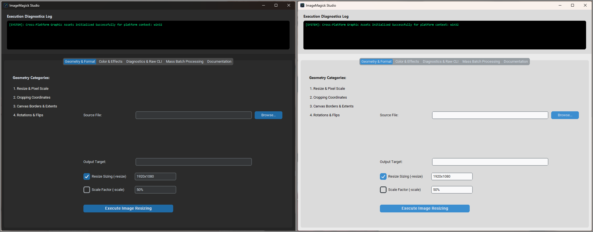

Geometry & Format Suite
Proportional scaling (-resize), precise crops (-crop), rotation, and canvas extensions (-extent).
ImageMagick GUI
Magick Studio wraps the ImageMagick command-line toolkit in a friendly desktop workspace for Windows, macOS, and Linux.
Overview

Proportional scaling (-resize), precise crops (-crop), rotation, and canvas extensions (-extent).
Tune compression (-quality), strip metadata (-strip), map color spaces (-colorspace), and apply blur and filters.
Process hundreds of files in a folder at once using extension filters and custom argument chains.
Run raw ImageMagick commands and extract full image metadata with identify -verbose.
Setup
Install Python and make sure it is on your system PATH.
Install the ImageMagick command-line binaries and add them to your system PATH.
pip install -r MagickStudio/requirements.txt
From the MagickStudio folder, run python main.py.
Double-click launch.vbs to open the GUI without a console window.
Double-click launch.command to open the GUI without a console window.
From the MagickStudio folder, run python3 main.py. The desktop shortcut currently references a missing launch.sh; see the repository's known issues.
Codebase
Each main tab is a controller module that loads independent sub-views ("cogs"), so new tools can be added without touching the rest of the app.
MagickStudio/
├── main.py # Application entry point
├── core.py # Shared subprocess wrapper & styling
├── requirements.txt # Python dependencies
├── launch.vbs # Windows launcher
├── launch.command # macOS launcher
├── MagickStudio.desktop # Linux desktop entry (launcher missing)
├── assets/ # Application icons
└── tabs/ # Main panel controllers
├── geometry.py
├── effects.py
├── raw.py
├── batch.py
├── documentation.py
├── geometry_cogs/
├── effects_cogs/
├── raw_cogs/
├── batch_cogs/
└── doc_cogs/Contributions, bug reports, and feature ideas are welcome. Fork the repository and open a pull request.